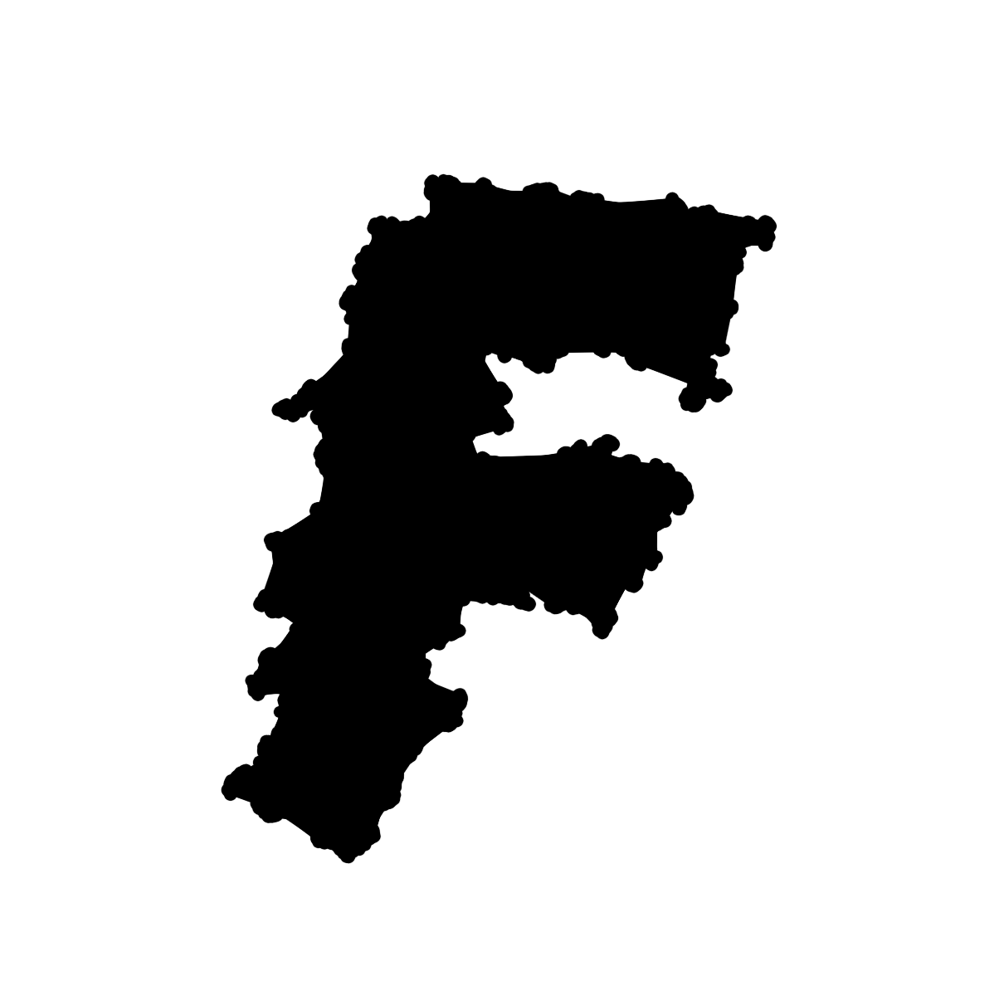

20.03.24
- Die Simulation der Natur (z. B. durch Turing Patterns) ist für mich als Gestaltende nicht so spannend, da die Algorithmen schon gegeben sind.
- Untersuchung/Archiv/«Setzkasten» von gestalterischen Möglichkeiten (nicht konkrete Anwendung wie z. B. ein Plakat) wäre für mich spannender.
- Exploration der neuen (ästhetischen) Möglichkeiten welche Creative Coding für das Grafikdesign bietet
- Creative Coding in Verbindung mit einem Element aus der Grafik, z. B. Typografie beziehungsweise Type-Design
- Explorationsfelder angelehnt an die Natur; z. B. Goldener Schnitt, Fibonacci-Folge, etc.
- Wie kann es attraktiv an der Werkschau präsentiert werden? ➔ Webseite weniger gut für die Ausstellung geeignet, zudem müsste viel Zeit fürs UI-Design aufgewendet werden. Vielleicht könnte man einen Screen verwenden, der Buchstaben durch Input vom Werkschau-Besuchenden beeinflusst (z. B. durch die Bewegung der Augen). Ausserdem könnte begleitend eine gedruckte Publikation/Broschüre vorliegen, welche einen Überblick über das erarbeitete Archiv bietet.
25.03.24
- Wie sind Buchstaben auf dem Computer gespeichert? ➔ Wie kann auf die Buchstaben-Formen zugegriffen werden?
- Welche neuen (ästhetischen) Möglichkeiten ergeben sich durch die Programmierung? ➔ Animation, Interaktion, neues Mass an Komplexität, etc.
- Welche technologischen Möglichkeiten gibt es im Schrift-Design? ➔ Variable Fonts, Color Fonts (COLORv1), Scripting etc.
- Wie können die ästhetischen Möglichkeiten der Programmierung auf die Körperlichkeit der Buchstaben angewendet werden?
- Was wären aus der Sicht der Grafikdesigner:innen attraktive neue Möglichkeiten im Bereich der Schrift?

27.03.24
- Der Begriffe «Type Specimen» wird sowohl im Schriftdesign als auch in der Biologie vewendet.
- In der Biologie wird noch zwischen einigen Begriffen unterschieden: Holotype, Syntype, Lectotype, Paratype, Allotype und Ergatotype.
- Definition aus der Biologie: ein Exemplar oder Individuum, das als Typ einer Art oder einer kleineren Gruppe bezeichnet wird und als endgültiges Kriterium für die Merkmale dieser Gruppe dient.
- Definition aus der Schriftgestaltung: die Präsentation einer bestimmten Schriftart, um ihr Design und/oder ihre Verwendung zu zeigen.

27.03.24
- Wie kann durch die steuerbaren Grundelemente (Punkte auf dem Schriftpfad) Variation in der Ausprägung der Schrift generiert werden?
- Arbeit mit den Bézier-Kurven, welche die Punkte auf dem Schriftpfad verbinden
- Die Punkte des Konturpfades verselbständigen sich, bleiben aber mit den Nachbarspunkten verbunden. Im Laufe der Zeit wird der Buchstabe unlesbar und zu etwas neuem.


28.03.24
- Posen klassifizieren mit PoseNet und ml5.neuralNetwork()
- «YMCA» Posen erkennen
- Die Pose für das M und C sind zu ähnlich, weshalb es zu Verwechslungen bei der Erkennung kommt.